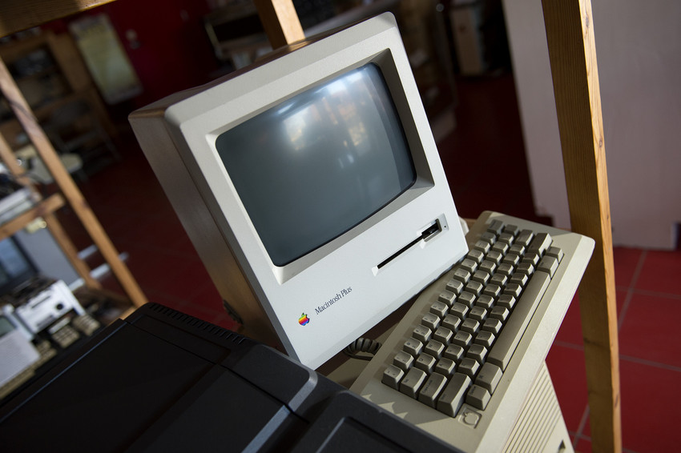
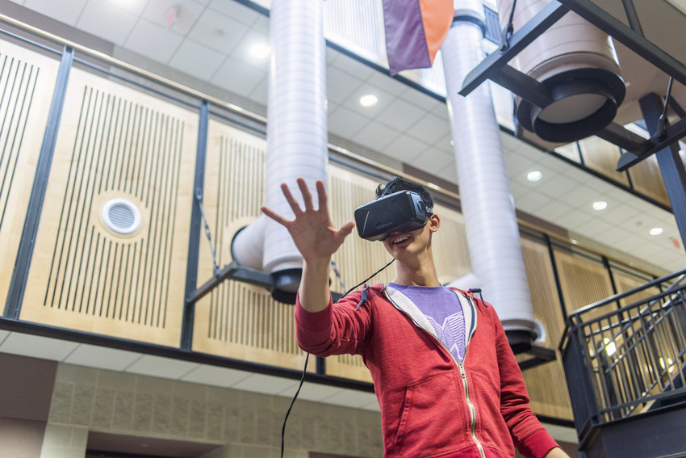

Remix
"It would not be the last time that the computer would be seen as the machine that would bring on a digital Utopia."
"... A form of expression and genius that builds upon the culture around us and makes it something different."
“We’re always reacting to a version that’s been updated.”
"The human mind ... operates by association. "
"Creators here and everywhere are always and at all times building upon the creativity that went before and that surrounds them now."

"We have to try as hard as we can to be ahead of the curve."
"... these condensations and abstracts incorporated in the world education system, will supply the humanity of the days before us, with a common understanding and the conception of a common purpose and of a commonweal such as now we hardly dare dream of. "
"To create these kinds of learners, it may be useful to remember that, alongside invention, we need to find both inspiration and imagination ... technology never works without people as part of the equation, because innovation is fundamentally a human pursuit. "
“We want our students to be able to think from art to science as Galileo did, and from science to art as Leonardo da Vinci did.”
"We may find that with a little adaptation ..."
"The physical and virtual environments of campus ... will be designed to support human-to-human interactions, emerging pedagogy, flexible learning, cutting-edge research, and the unique mission of Virginia Tech. "
"As we move into the next generation, we will ..."
"... Promote complex collaborative inquiry and problem solving for all students and faculty through multiple interrelated instruments."
"This is no remote dream, no fantasy ... It is on the level of practicable fact."
"Students need to be adaptable, resilient, and culturally competent, seeing the world through the lens of empathy and our university’s motto, Ut Prosim (That I May Serve).”